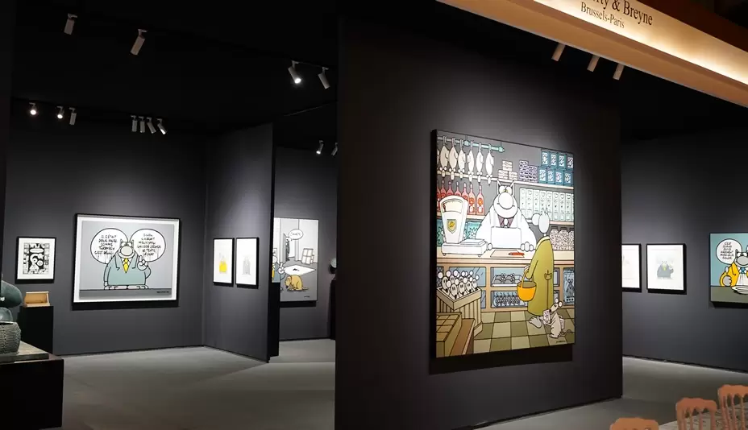
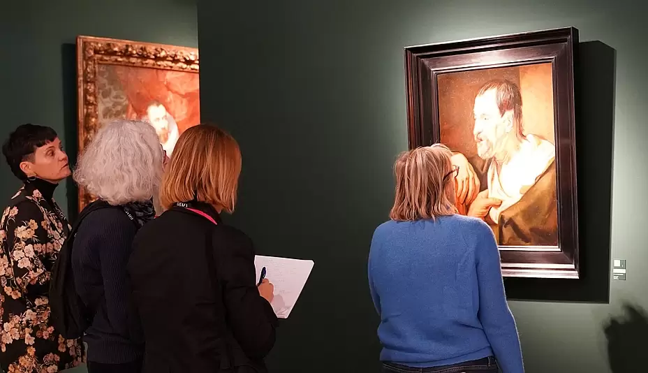

BRAFA 2023 is een oneindig universum van kunst ontdekkingen
BRAFA opent vandaag van 29 januari tot 5 februari 2023, zijn deuren in Brussels Expo. Het decor zal worden gevuld in de stijl van Art Nouveau, het thema gekozen voor deze 68ste editie, in een enscenering door Volume Architecture, dat dit jaar 20 jaar samenwerking met BRAFA viert. De beurs staat bekend om het scala aan specialiteiten dat het presenteert aan verzamelaars en kunstliefhebbers uit heel Europa en daarbuiten. Ook dit jaar belooft het meer dan 10.000 kunstwerken uit de oudheid tot heden. Dertien nieuwe galerieën voegen zich bij de vaste exposanten op de beurs.
Elk van de 130 deelnemende galerijen toont hun mooiste objecten, vakkundig aangelegd op stands die strijden om originaliteit en elegantie. Een echte ontdekkingsreis! Hieronder hebben we enkele uitzonderlijke kunstwerken geselecteerd uit de verschillende specialiteiten.
Een van de belangrijkste kunstwerken van deze uitgave is ongetwijfeld het schilderij Studie van een evangelist van Jacob Jordaens uit de 17e eeuw. Verzamelaars kunnen het werk van de kunstenaar, dat vergelijkbaar is met een schets, vinden in het Rijksmuseum in Amsterdam, op stand 4 van Klaas Muller. Jacob Jordaens was samen met Pieter Paul Rubens en Antoon van Dyck een van de drie meesters van de 17e-eeuwse Vlaamse schilderkunst.
Jordaens, sterk beïnvloed door Rubens, ontwikkelde niettemin een heel eigen stijl: enerzijds realistisch met een caravaggeske stijl en anderzijds monumentaal en expressief.
In klassieke beeldhouwkunst toont Desmet Gallery, gevestigd op stand 31, een prachtige buste van Luigi Valadier wiens bronzen werk uitzonderlijk is. Als afstammeling van een dynastie van goudsmeden was hij een beeldhouwer die zeer gewaardeerd werd door invloedrijke families in Rome. Tot zijn cliënten behoorden paus Pius VI en aartshertog Ferdinand van Oostenrijk. Hij kreeg ook opdrachten van kerken over de hele wereld.
Tussen de tentoongestelde tribale werken kunnen bezoekers een opmerkelijk beeldje ontdekken op stand 7 van Dalton Somaré (IT). De Milanese galerie presenteert een perfect geometrisch beeldhouwwerk. Dit is een vroeg en klassiek voorbeeld van een Kota-bewakerfiguur, die zich onderscheidt van het corpus van Obamba-reliekschrijnen door de precisie van de fabricage. Het gezicht is een scherpe ellips, doorsneden door twee brede banden van koper, die de figuur een strenge en dromerige uitdrukking geven. Naast zijn onberispelijke stamboom kan dit beeld worden beschouwd als een van de meest expressieve en puurste voorbeelden van deze stijl.
Eveneens niet te missen is een uitzonderlijk servies in vermeil de Paris van Abel-Etienne Giroux en Charles Salomon Mahler op stand 42 van Bernard De Leye, in de periode Empire-stijl, dat behoorde aan de families Aligre-de Pomereu. Het bestaat uit 36 dinerborden, 8 vierkante compoteschalen, een grote bestekset bestaande uit 234 stuks opdienbestek en een kan en een kom aangevuld met twee paar van koelers van Marc Jacquart in dezelfde stijl en uit dezelfde periode, en een grote wijnemmer van Martin-Guillaume Biennais uit het servies van Nicolas Pavlovitch Romanov, een toekomstige tsaar. Het stel is gecompleteerd door een theepot en een paar vijfarmige kandelaars van Martin-Guillaume Biennais, evenals een wijn nef, die toebehoorde aan de groothertog Mikhael Pavlovich, de broer van de tsaar. De set vormt een zeer zeldzaam en homogeen geheel.
Jean Lemaire, die stand 44 zal bezetten, presenteert een prachtig servies in Chinees porselein, bestaande uit vijftig borden (40 borden, 4 schalen, 3 kopjes...) uit de 18e eeuw, met wapenschilden van grote Europese families, waaronder die van Frederik II van Pruisen (1755) en van Lodewijk XV.
In Röbbig München kunnen Meissen-porseleinliefhebbers (stand 50) een paar grote leeuwen bewonderen, gemonteerd op verguld brons (Parijs, Lodewijk XV-periode, circa 1750), van Johann Joachim Kaendler (1706-1775) uit 1748, evenals een set van vier porseleinen wandlampen van Christophe Jünger (1736-177), Wenen, circa 1750-60.
Simon Studer Art SA (CH), stand 57, gevestigd in Genève en gespecialiseerd in impressionistische, moderne en hedendaagse kunst, presenteert een aquarel op papier gesigneerd door Joan Miró. Gedateerd 2 mei,1942, het behoort tot de laatste productieperiode van de kunstenaar in Palma de Mallorca, voordat hij terugkeerde naar zijn geboorteland Barcelona. Het Europese politieke klimaat had een grote invloed op zijn werken, die worden bevolkt door monsters en verbijsterde figuren. Niettemin wordt de aanwezigheid van deze verontrustende wezens soms onderbroken door de verschijning van de zorgeloze kinderwereld, waaraan hij ongetwijfeld werd herinnerd door zijn dochter Maria Dolors, die toen 12 jaar oud was. Dat is het geval in dit werk, waar we kleine meisjes zien spelen met een springtouw, hun ogen omhoog gericht naar de vogel die boven hen vliegt. De drie figuren zijn geïndividualiseerd, elk met hun eigen onderscheidende kenmerken. Naast de beroemde sterren van Miró wordt de compositie geanimeerd door verschillende spatten van felle kleuren, die doen denken aan de vreugde en levendigheid van de kindertijd. Ook op dezelfde stand is een werk van museumkwaliteit door Johann Heinrich Füssli, ook wel bekend als Fuseli (1741 - 1825), Lady Constance, Arthur en de graaf van Salisbury (uit Shakespeare, King John, III, I) 1825.
Wat de Belgische kunst betreft, zal stand (110) van Samuel Vanhoegaerden Gallery volledig gewijd zijn aan een van de belangrijkste kunstenaars van de CoBrA-beweging, Pierre Alechinsky. Er zijn circa 30 werken te zien, daterend van de jaren 60 tot nu. Het middelpunt van de stand, en een van de belangrijkste werken van de kunstenaar, is L'or du rien, dat voor het eerst werd gepresenteerd op de 36e Biënnale van Venetië in 1972. Het is de eerste keer in 25 jaar dat een panorama van deze omvang en belang is gepresenteerd in een galerie.
Andere galerijen aanwezig op BRAFA bieden kunstwerken van Pierre Alechinsky aan: Harold t'Kint de Roodenbeke, stand 32, met 10 werken daterend van 1950 tot 1970, maar ook DIE GALERIE, stand 78, de Maurice Verbaet Gallery, stand 13, Galerie Boulakia, stand 47, Galerie Jamar, stand 91, Galerie Seghers, stand 121, Rodolphe Janssen, stand 36 en Galeries AB-BA, stand 73.
Gokelaere & Robinson, stand 35, zal in de designafdeling, die plaats zal bieden aan een tiental galerijen, een prachtig scherm tonen dat in 1953 werd ontworpen door de Italiaanse ontwerper Piero Fornasetti. De ontwerper liet zich sterk inspireren door de art nouveau en plaatste ornamentiek centraal in zijn creaties. De golvende lijnen, delicate tekeningen en trompe-l'oeil-weergave van lambrisering met architecturale motieven geven dit scherm een verfijnd, decoratief aspect, een essentiële eigenschap van art nouveau artistieke producties. De naturalistische decoratie van dit stuk, met afbeeldingen van vogels en bloemmotieven, roept ook de Engelse wandtapijten van de Arts and Crafts-beweging op.
In dezelfde sectie toont een nieuwe exposant, Galerie Pascal Cuisinier, stand 92, een opmerkelijk bureau, van Joseph-André Motte (Saint-Bonnet 1925-1990 Parijs), uit 1962, in Rio palissander, leer en verchroomd metaal. Een ander emblematisch werk op dezelfde standaard is een wandlamp met dubbele pendel van Robert Mathieu, 1955, in zwart en geel gelakt metaal en gepolijst metaal.
Een must-see op BRAFA : stand 76 van galerij Morentz die aan weerszijden van een rode wenteltrap is gearticuleerd door Georges Ferran, gemaakt voor Axe, in polyesterschuim, staal en lak, Frankrijk, 1971. Op het gebied van hedendaagse kunst presenteert Nosbaum Reding Gallery, stand 16, een monumentaal werk van Damien Roubaix, geïnspireerd op Pablo Picasso's meesterwerk Guernica, dat de wreedheden van oorlog en fascisme aan de kaak stelt aan de hand van het voorbeeld van de bombardementen van het dorp Guernica.
In 1955 ontstond een eerste herinterpretatie van het werk: een tapijt geweven door Jacqueline de la Baume-Dürrbach, aangekocht door de Rockefellers en momenteel te zien in het hoofdkwartier van de Verenigde Naties in New York. Twee andere versies volgden: de versie uit 1976, aangekocht door het Musée Unterlinden in Colmar, en de versie uit 1985, aangekocht door het Musée d'Art Moderne in Gunma. Deroubaix ontdekte als tiener het wandtapijt dat bewaard is gebleven in Colmar. Dit stuk zou een van zijn bronnen van artistieke inspiratie blijven en een groot deel van zijn werk markeren.
BRAFA verwelkomt dit jaar voor het eerst in de rubriek juwelen de Nederlandse galerie VKD Jewels, stand 109, die een zeldzame armband van René Kern zal aanbieden in geel en wit 18 karaats goud. De manen van het paard zijn samengesteld uit gouden en met diamanten bezette sloten, terwijl het voorhoofd eruit is gesneden lapis lazuli. Duitsland, circa 1960. René Kern, gevestigd in Düsseldorf, was het glamoureuze adres voor uitzonderlijke sieraden in de jaren '60 en '70. Tot zijn klanten behoorden Duitse industriële reuzen, zoals evenals de sjah van Perzië en koning Hassan van Marokko.
BRAFA vindt plaats van zondag 29 januari tot en met zondag 5 februari 2023 in Brussels Expo in de hallen 3 en 4. De beurs is elke dag open van 11u tot 19u, met een nachtelijke opening tot 22u op donderdag 2 februari, 2023